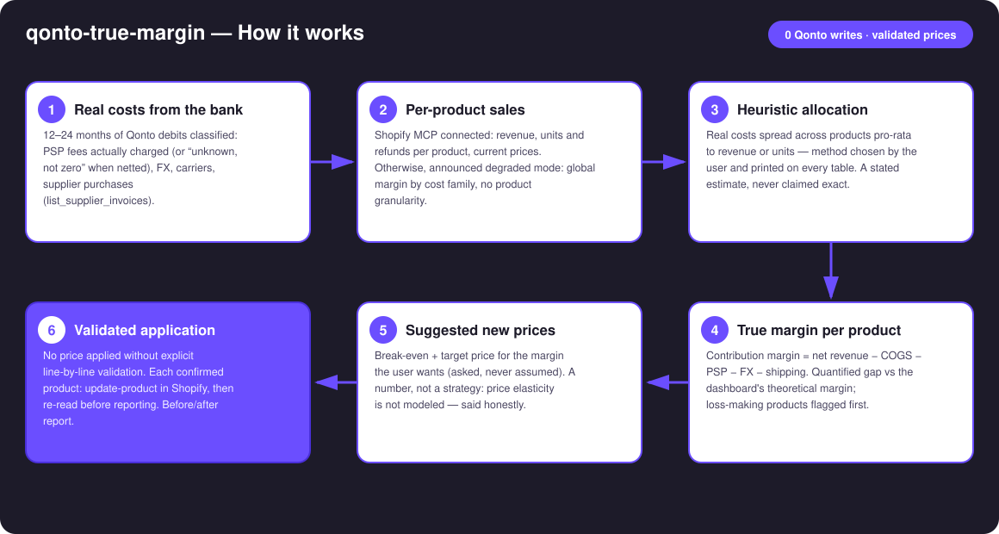
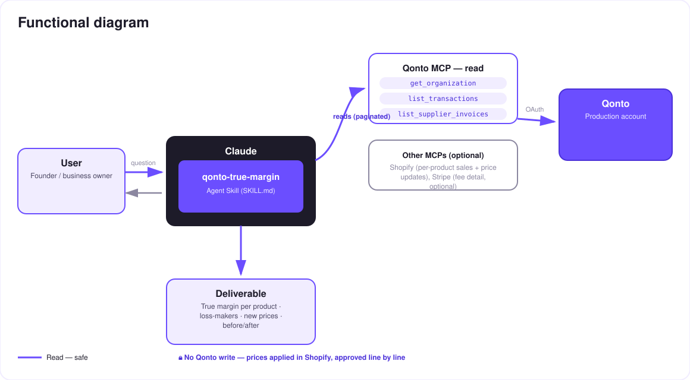

Pricing from real banking costs — the dashboard's margin is a fiction; the bank account knows the real one.
Every e-commerce dashboard shows a margin built from theoretical costs. What actually leaves the bank account — PSP fees really debited, FX costs, real carrier invoices, supplier purchases — tells a different story. The skill rebuilds the truth, then turns it into a pricing decision:
Observed PSP fees (or "unknown, not zero" when netted inside payouts), FX, carriers, supplier COGS — tagged 🟢 observed · 🟡 derived · ⚪ unknown.
Shopify per-product sales − real costs allocated pro-rata (revenue or units) — the method is printed on every table.
Sorted first, with the quantified gap between the dashboard's theoretical margin and the real one.
Break-even + target price; applied in Shopify (update-product) only after explicit line-by-line validation.
| Prerequisite | Detail | Required |
|---|---|---|
| Qonto production account | The skill adapts to any organization — get_organization first, nothing hardcoded | ✅ |
| Country | Universal — identical for all Qonto countries (FR, DE, ES, IT, AT, NL, BE, PT); multi-currency reported per currency, never converted silently | ℹ️ detected |
| Qonto MCP connected | Official connector (claude.ai / Claude Desktop), OAuth login | ✅ |
| Shopify MCP connected | Per-product sales + price updates. Without it: announced degraded mode — global margin by cost family, no product granularity | ⭕ recommended |
| Stripe MCP connected | Per-charge fee detail | ⭕ optional |
| ≥ 3 months of history | Below that: lower confidence tags + honest warning | ⭕ |

emitted_at (1–2 day drift vs settled_at) · refunds deducted from net revenue · foreign-currency debits → real FX cost isolated
On the Qonto side: read-only. No banking write tool exists in this skill — nothing can move on the account. The only write is on the Shopify side (price updates): each product requires explicit validation in the conversation, a global "apply everything" is refused, and the price is re-read after application before being reported.
| Family | Source | Quirk handled |
|---|---|---|
| PSP fees | Separate fee debits (Stripe billing, PayPal…); otherwise gross vs net via Shopify | Shopify Payments nets its fees inside the payout → "unknown, not zero" without Shopify |
| FX | Debits whose local currency ≠ account currency (local_amount/local_currency) + explicit fee lines | Real conversion cost isolated, never estimated from a public rate |
| Shipping | Carrier counterparties (Colissimo, Chronopost, Mondial Relay, DHL, UPS, Sendcloud…) | Card payments reconciled on emitted_at (1–2 day drift) |
| Supplier COGS | list_supplier_invoices + recurring supplier debits | Invoice → product matched directly when named, otherwise pro-rata allocation |
| Fixed costs | Everything else (rent, SaaS, salaries) | Excluded from contribution margin, disclosed separately — stated plainly |
qonto-shopify-bridge| qonto-shopify-bridge | qonto-true-margin | |
|---|---|---|
| Nature | Accounting record of the past | Pricing decision for the future |
| Question | "Did Shopify actually pay me?" | "Does this product actually make me money?" |
| Core | Reconciles payouts ↔ bank, observes effective fees | Consumes those observed costs → true margin per product → new prices |
| Writes | None (fully read-only) | None on Qonto; Shopify prices on line-by-line validation |
Shared input, opposite output: run the bridge when a payout looks wrong; run true-margin when a price needs fixing. The two skills reference each other.
| Product | Price | Dashboard margin | True margin | Verdict |
|---|---|---|---|---|
| Enamel mug | €24.90 | 38% | −4% | 🔴 sold at a loss (real shipping) |
| Tote bag | €19.90 | 45% | 22% | 🟠 fees + FX underestimated |
| A2 poster | €34.90 | 42% | 11% | 🟠 recommended price: €39.90 |
Every figure in this table is invented for the example — the skill only shows numbers computed on the user's own account, with the allocation method in the caption.
| Output | Format | When |
|---|---|---|
| Conversation reply | Markdown tables (cost families, per-product margins, proposals, before/after) | Always — the baseline |
| Interactive dashboard | HTML file/artifact: waterfall from dashboard to real margin, loss-makers, price simulator | When the host renders files (claude.ai artifacts, Claude Desktop, Claude Code); automatic fallback to tables otherwise |
| Shopify confirmation | get-product re-read after every update-product | Every validated application |
The ≤ 3-minute demo attached to the PR walks through: the dashboard margin that lies → the real costs read from the bank debits → the reveal (the best-seller showing 42%… actually 11% — invented demo figures) → the new price validated line by line and applied in Shopify → the final dashboard. The detailed shooting script is kept internal (out of the repo).
| Idea | Effort | Note |
|---|---|---|
| Weight/order-based shipping allocation (Shopify data) | Medium | Replaces the pro-rata for the shipping family |
| Per-charge fee detail via the Stripe MCP | Low | Already planned as optional — upgrades 🟡 to 🟢 |
| Monthly true-margin drift tracking | Low | Alert when a product slips under its threshold |
| Compared pricing scenarios (2–3 target-margin hypotheses) | Low | In the HTML simulator |